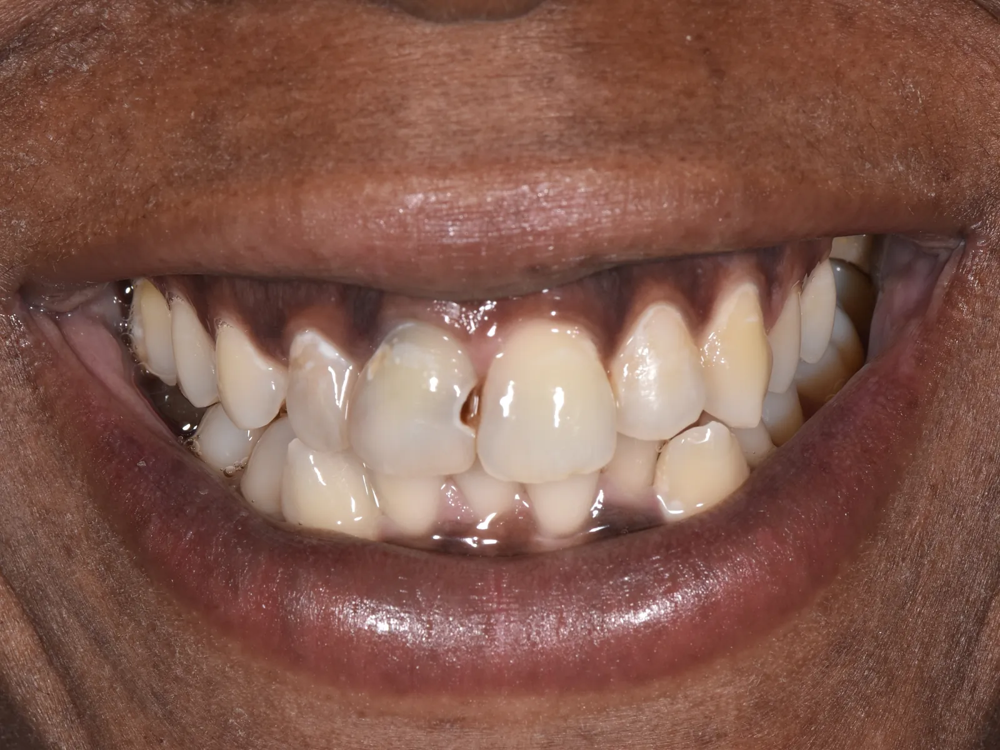
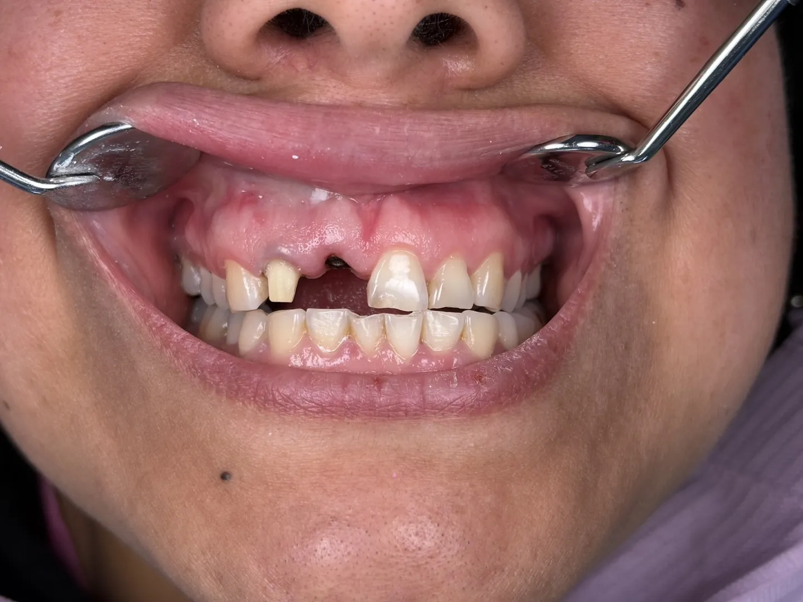
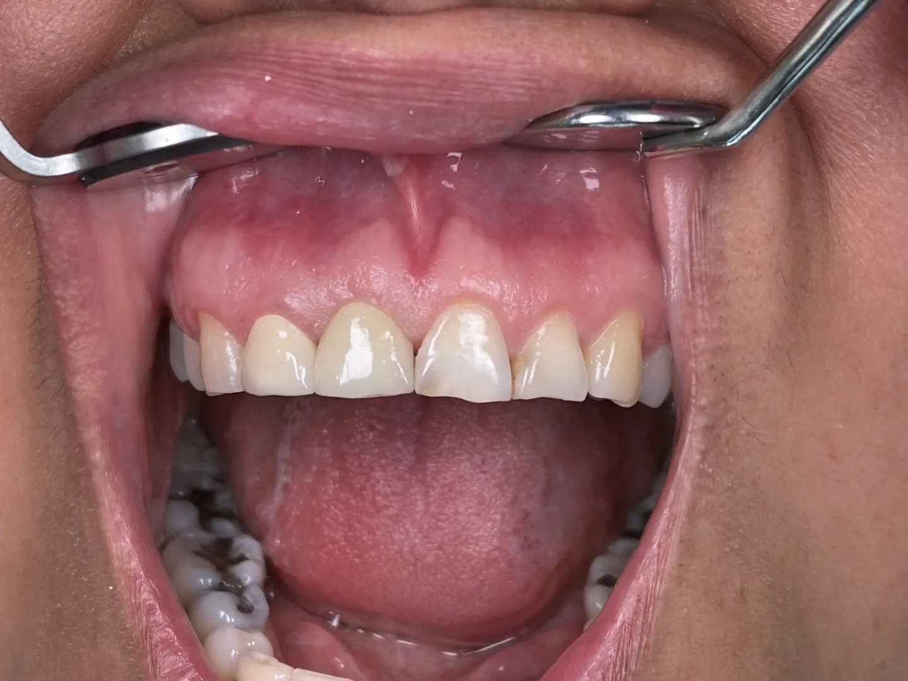
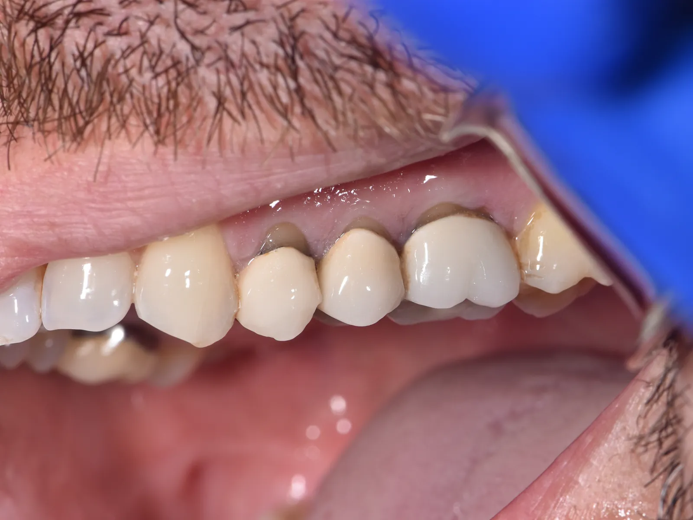
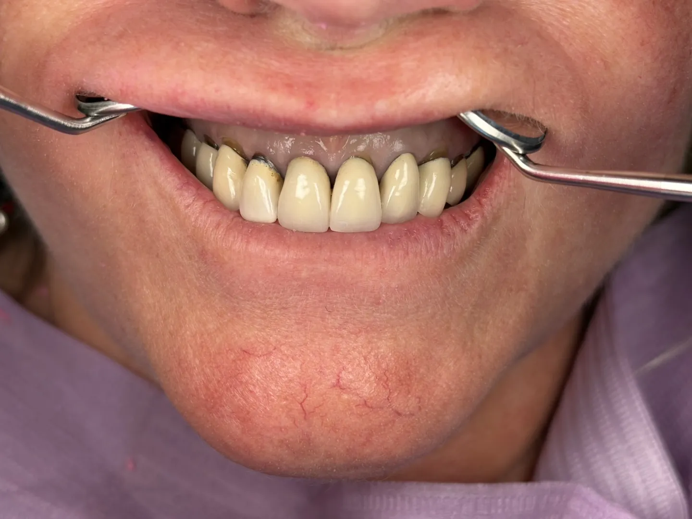

Same-Day Implants.
For the right patient, an implant and a temporary tooth in one visit.

Mount Kisco, NY · Kent, CT · Stamford, CT
Dentistry Built on Trust. Implants Designed to Last.
Same-day visits for patients in pain. Hablamos español. All services
Implant Dentistry
A missing tooth, replaced by a surgeon who teaches the technique.

Full-Mouth Reconstruction
All-on-4 and All-on-X. A full set of fixed teeth on implants.

For the right patient, an implant and a temporary tooth in one visit.
See your new smile in a digital preview before any tooth is touched.


Toothache, broken tooth or lost crown? We often see patients the same day.
Real Patients, Real Results
Photos of our own patients, shared with their written permission. No stock images.

BeforeAfter
Before
After
BeforeAfter
Before After
AfterYour Doctors
An implant surgeon who teaches implant surgery to dentists across North America, and a dentist known for his calm, gentle approach.

“Today's experience was tremendous. I am a first-time patient and only wish I had met them years ago. Dr. Kwon was professional and relaxed, and his hygienist was exceptional.”
“Dr. Kwon and his staff are excellent. They make me feel calm and unafraid, amazing for me. I believe after many years, they will help me to smile again.”
“My first visit today and I was well informed about my results. This would be the first time I didn't feel pressured to do any dental work that wasn't even necessary.”
“Dr. Kwon truly cares about his patients and always makes me feel comfortable and safe. I have complete faith in the team and recommend them to friends and family.”
“The team is great, both doctors are knowledgeable and skilled, and everyone is personable. I definitely recommend Dr. Kwon and Dr. Park.”
Three Offices
Book online any time, or call and the team will help you choose a time.
New York
39 Smith Ave, Rear LL
Mount Kisco, NY 10549
Connecticut
70 Maple St
Kent, CT 06757
Connecticut
800 E Main St
Stamford, CT 06902
Open Saturdays. Complimentary parking on site.